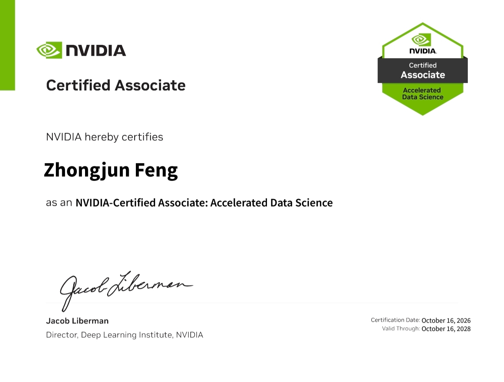

报考初心：为什么是 NVIDIA 认证
一个 pandas 老兵的算力焦虑
先交代背景：我做数据相关工作几年了，pandas 和 scikit-learn 是吃饭家伙。日子本来很平静，直到业务数据从百万行涨到亿级——一条特征管道跑四个小时，CPU 集群排队能排到我下班。而隔壁搞深度学习的同事，显卡一响，同样的活几分钟交卷。
瓶颈不在模型，在数据预处理。这是那次之后我认下的判断，也是后面整个备考路上反复被验证的一句话：GPU 不是只属于深度学习的，整个数据科学工作流都可以被加速。
至于为什么选 NVIDIA 认证，而不是云厂商那一排认证，我的理由很实际：
云认证绑定单一平台、偏重运维视角；而 NVIDIA 认证讲的是「加速计算」本身——从 GPU 原理到 RAPIDS 数据科学栈，知识是横跨云和本地、跟着人走的。再叠加 NVIDIA 在加速计算生态里的位置，这张证的行业背书是真的硬。
还有一个朴素的原因：DLI（NVIDIA 深度学习学院）有配套的官方学习路径，考什么、学什么、去哪学，链条是闭的。对在职党来说，「路径清晰」四个字比什么都值钱。正好赶上 10 月 15–16 日苏州 NVIDIA 中国开发者日活动，现场就有认证考试场次——我立刻报了名，顺便给自己造了一个没法拖延的 deadline。
备考实战：三周冲刺全攻略
考纲即边界 · 代码动手 · 错题本收口
我给自己的有效备考时间是 21 天，每天工作日 1–1.5 小时、周末各半天。总策略就三句话：以官方考纲为边界不做无效扩展、所有知识点用代码跑一遍、最后用错题本收口。
三周作战地图
GPU 基础 + 官方课程通读
过完 DLI 官方《Fundamentals of Accelerated Data Science》课程，重点理解 GPU 为什么适合数据科学：海量核心、吞吐优先于延迟、PCIe 带宽与显存这两个决定性约束。同时在 Colab 的免费 T4 上把一份自己的 pandas notebook 改写成 cuDF——亲身体会「API 几乎无缝」是什么感觉。
把 RAPIDS 全家桶敲一遍
cuML 对照 sklearn 做映射实验；cuGraph 跑了一遍图分析样例；用 Dask 体验多卡/分布式 DataFrame；搞清楚 RAPIDS Accelerator for Apache Spark 到底加速了 Spark 的哪一段。开始刷官方样题，每道题回溯到考纲条目，同步整理笔记。
错题本 + 概念盲区扫尾
错题二刷，主攻概念辨析：NGC 容器目录、Triton / TensorRT 在推理链路里的位置、NVLink、MIG、统一内存这些名词卡。最后三天每两天一次计时模拟，练节奏也练心态。
五大知识域拆解
按我的备考笔记，把知识域和复习抓手整理成一张表（精力分配仅供参考）：
| 知识域 | 我的精力 | 关键点 / 抓手 |
|---|---|---|
| GPU 加速基础 | 20% | PCIe 与显存约束、数据传输开销、数据驻留（data locality）、什么时候 GPU 反而更慢 |
| cuDF 数据处理 | 25% | 与 pandas 的 API 映射与差异、何时回退 CPU、ETL 全流程实操 |
| cuML 机器学习 | 20% | sklearn 对照实验、参数与数据规模的关系、模型选择的场景判断 |
| 规模扩展 | 20% | Dask 分布式、多卡协同、RAPIDS 加速 Spark 的适用场景 |
| 生态与部署 | 15% | NGC 容器、Triton / TensorRT 概念级认知、端到端工作流名词辨析 |
刷题方法：不做题海，做「回溯」
样题数量有限，我的用法是：每道题都写出「考点 + 依据」——这个考点在官方课程哪一章、对应哪个概念。写不出来就说明知识域有洞，回去补。遇到拿不准的术语就做一张名词卡（比如「统一内存是什么、解决什么问题」），通勤时翻。题不在多，在于每道题都变成知识网的锚点。
在小数据集上测加速比，得出「GPU 没用」的错误结论
我在几万行的数据上对比 pandas 和 cuDF，发现 GPU 还更慢，差点劝退。原因很简单：CPU↔GPU 的数据拷贝开销是固定的，数据量不过阈值根本摊不平。测试加速比，数据必须够大。
只背 API，不练「方案选型」
考试里有大量情景题：给你一个工作流和瓶颈描述，问该怎么选工具。它考的是「何时用、为什么用」，不是「怎么调用」。光背 API 签名是过不了关的，要练用自己的话把每个组件的适用边界讲清楚。
中文资料术语滞后，概念对不上号
部分中文教程的译名和官方文档对不齐。概念题里一个术语认错，整题就废了。后期我全部以官方文档的英文术语为准，笔记里中英对照着写。
RAPIDS 最高效的学习姿势：迁移，而不是重学
cuDF / cuML 的 API 设计对 pandas / sklearn 用户极度友好。正确的打开方式不是从零学一套新框架，而是拿一份你亲手写过的旧 notebook 做迁移练习——每一个报错、每一处行为差异，都是最值钱的考点。
考试日实录：苏州开发者日现场
10 月 16 日 · 线下机考全流程
考试当天，上午还在会场听 keynote，下午提前一小时到认证考试区。流程比想象中顺畅：核验报名信息与身份证件 → 手机统一存放 → 入座机考。现场环境安静，监考很正规，桌上可以要草稿纸（我全程就画了一张数据流图压惊）。
以我这一场为例：50 道选择题，限时 60 分钟，闭卷机考；单选为主、穿插多选。有个很厚道的设计：多选题会直接标注「本题有几个正确选项」——排错范围瞬间收窄，不用瞎猜选项个数。我的做题策略是三遍法：第一遍快速过、拿不准的先标记跳过；第二遍集中攻坚标记题；最后留几分钟回头检查。多选题我的原则是「先排除、后凑数」：先把确定错的删掉，剩下的拿不准也要选满标注的数量——既然官方都告诉你答案有几个了，空着不选满才是真的亏。
印象最深的反而是心态管理。坐我旁边的大哥提前半小时交卷走人，我盯着屏幕一度有点慌——后来想想，认证考试比的是过线，不是排名。把它当成一次「付费的全真模拟」，反而发挥得稳。交卷那一刻其实心里没底，当晚收到通过邮件时，在工位上没忍住握了个拳。
唯一想吐槽的：这次通过的人太多，现场发的 NVIDIA 小徽章，排到我的时候已经发光了——痛失实体战利品一枚，只能拿电子证书自我安慰。好在证书在 NVIDIA 认证门户可以直接下载 PDF，当晚就安排进了简历和领英。
- 考试科目
- Accelerated Data Science
- 认证级别
- NVIDIA Certified Associate
- 考试形式
- 线下闭卷机考 · 50 题 / 60 min
- 备考周期
- 21 天（工作日 1–1.5h）
- 考试地点
- NVIDIA 中国开发者日 · 苏州
- 结果
- PASS ✔ 一次通过
心得收获：比证书更值钱的东西
认知升级 · 思维转变 · 下一步
认知：GPU 不是「更快」，是「更宽」
备考前我对 GPU 的理解是「深度学习专用加速器」。备考后我的版本是：GPU 是一台吞吐机器，而数据科学的瓶颈恰恰常常出在吞吐环节——读取、清洗、join、聚合。把整条工作流搬到 GPU 上，收益往往比只加速模型训练大得多。这个视角的切换，是这 21 天里我认为最值钱的收获。
思维：先画瓶颈图，再谈加速
以前优化习惯是「哪里慢点哪里」。现在我会先老老实实 profiling，画出整条管道的耗时分布——如果瓶颈在 IO，堆再多功能卡也是白搭。加速比永远由最慢的那一段决定，这个朴素的道理，在做题和实战里反复应验。
实战：已经落地的收益
考完回来，我把组里一条亿级行的特征管道做了 RAPIDS 试点迁移，ETL 耗时从小时级压到了分钟级（具体加速比和场景强相关，仅分享个人案例，不做承诺）。更直接的是求职侧的体感：JD 上「熟悉 GPU 加速数据科学 / RAPIDS」这类要求，从「看着发虚」变成了「可以聊聊」。
给后来者的三句话
一、早报名，用 deadline 对抗拖延，线下考试场次是天然的冲刺发令枪；
二、动手大于收藏夹，一份亲手迁移的 notebook 胜过十篇教程；
三、考纲就是最好的 todo list，边界清晰，别在考纲外的深水区自我感动。
至于下一步：Associate 只是起点，我计划继续挑战 NVIDIA 认证体系里更高级别的 Professional 认证，同时把 RAPIDS 引入更多生产管道。学习这件事，考上瘾了，就停不下来。
弹药库 & 证书展示
我全部的备考资源，拿走不谢

顺便补一刀：现场的小徽章发完了，没领到，所以只有证书照。
以经验共赴成长，以学识赋能前行。
如果这篇实录帮你少踩了一个坑、多了一份报考的底气，那它就完成了使命。
考场见，祝你一次通过。
$ nvidia-smi — see you on the fast lane ⚡